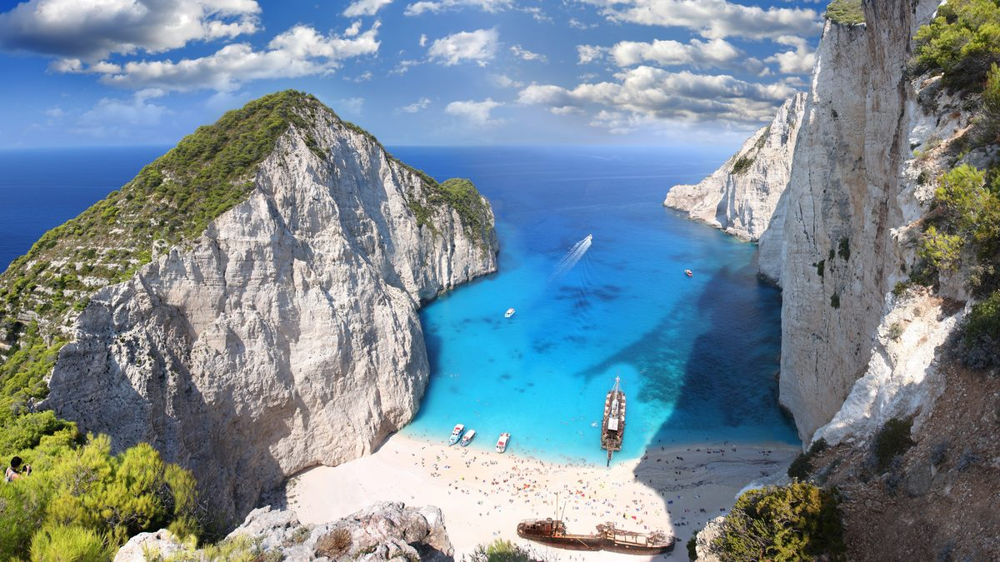
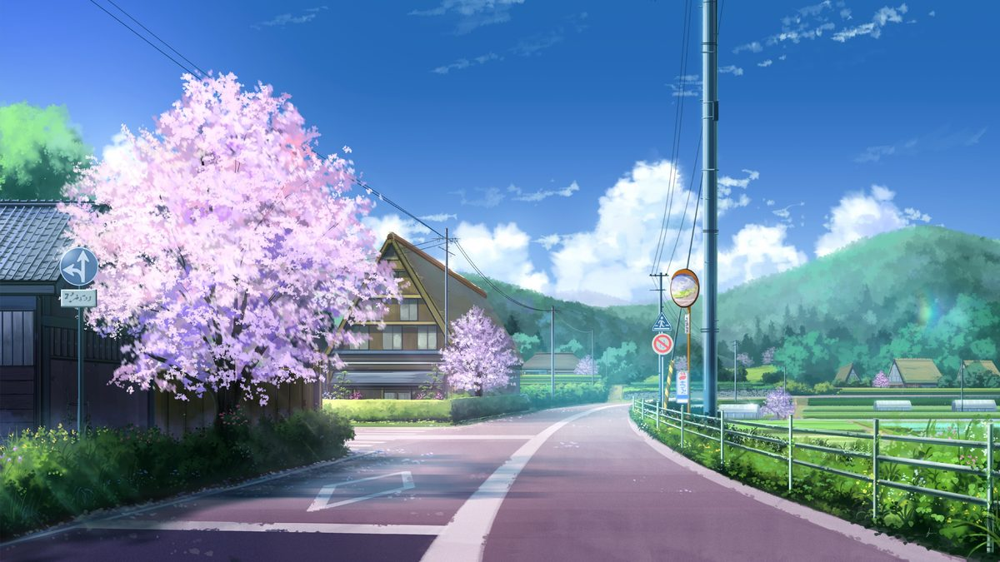
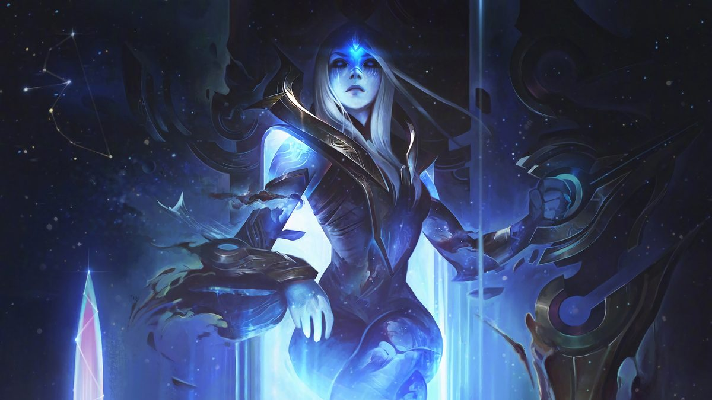
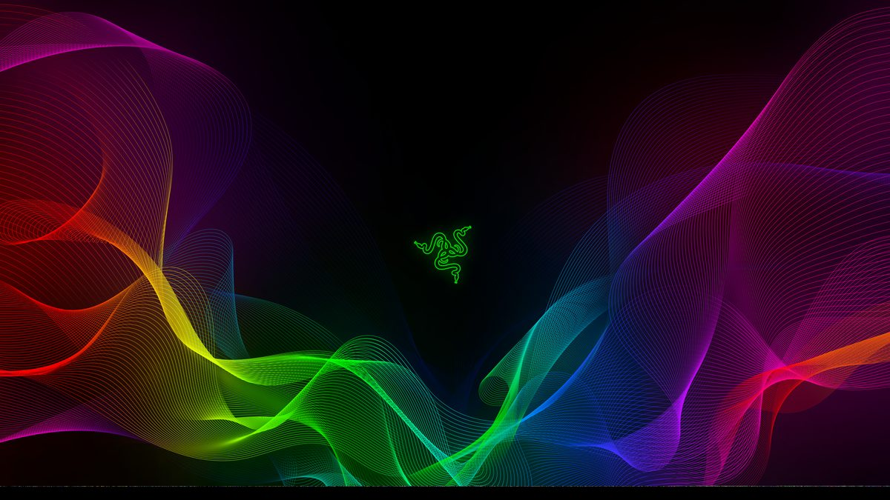

Menu bar and Dock <lg-menubar> <lg-dock>
Menus drop open as glass panels with a sliding highlight. Hover the Dock: its lens magnifies whatever sits underneath.

Glass that actually bends light, like Apple’s Liquid Glass, rendered live in Chrome, Safari and Firefox. One script tag, zero dependencies.
Eleven custom elements built on one refraction engine. The real controls stay native underneath, so keyboards, screen readers and forms keep working.
<lg-menubar> <lg-dock>Menus drop open as glass panels with a sliding highlight. Hover the Dock: its lens magnifies whatever sits underneath.

toast()Toasts drop in on a spring and stretch as they land. Panels frost and bend the photo behind them.
Press and hold: thumbs turn from solid white into glass and squish under your finger, like on iOS.

<lg-navbar>A glass indicator glides to whatever you point at, stretching with its speed. Buttons squish when pressed.

Bend anything.Text under the lens stays selectable.
<lg-lens>Wrap any content and a lens follows the pointer. Everything outside it is the original DOM, untouched.
Every lens is drawn from a displacement map generated for its shape. Change the optics and watch the map redraw, then copy the markup.
Most web liquid-glass demos use backdrop-filter with an SVG filter, which only Chromium renders. This library bends the element’s own pixels instead.
An SVG feDisplacementMap is applied with a plain CSS filter, the one form every engine renders. Glass over a photo bends an aligned copy of it.
Red and green store how far each pixel bends, blue stores the rim highlight. Maps are drawn at runtime, cached, and only a quarter is computed.
WebKit only renders bounding-box filter units, and each engine scales displacement differently. The library measures that and compensates.
Sliding a lens only shifts a filter region. The map is redrawn only when the glass changes shape, so drags hold their frame rate on phones.
Switches and sliders are native inputs with a decorative glass copy on top. Focus rings, keyboards, screen readers and reduced motion all work.
Two ES modules, about 30 KB gzipped together. Works in plain HTML, React, Vue, Svelte, or anything else that renders DOM.
Verified with Chrome 153, Safari 27 and Firefox 156 by rendering the same page in each engine and comparing screenshots at full resolution.
| Chrome · Edge | Safari · iOS | Firefox | |
|---|---|---|---|
| Controls, lens, glass over images | Refraction | Refraction | Refraction |
| Glass over arbitrary page content | Refraction | Frosted blur | Frosted blur |
| backdrop-filter: url() demos | Refraction | Nothing | Nothing |
The sticky navbar on this page floats over arbitrary content, so outside Chromium it falls back to a frosted blur. Everything over a known image refracts everywhere.
No build step and no framework. Load the module, then write the elements like any other HTML.
From liquidglass.dev, or copy the two files in lib/ into your project.
Controls work on any surface. Set --lg-surface to the colour behind them.
Mark the image as the backdrop. Glass inside refracts it in every browser.
Toasts are a function. Pass a container to keep them inside a stage.
Install the liquid-glass-web skill for Claude Code or Codex. It teaches the agent the technique, the per-engine fixes, and how to verify glass in all three browsers.